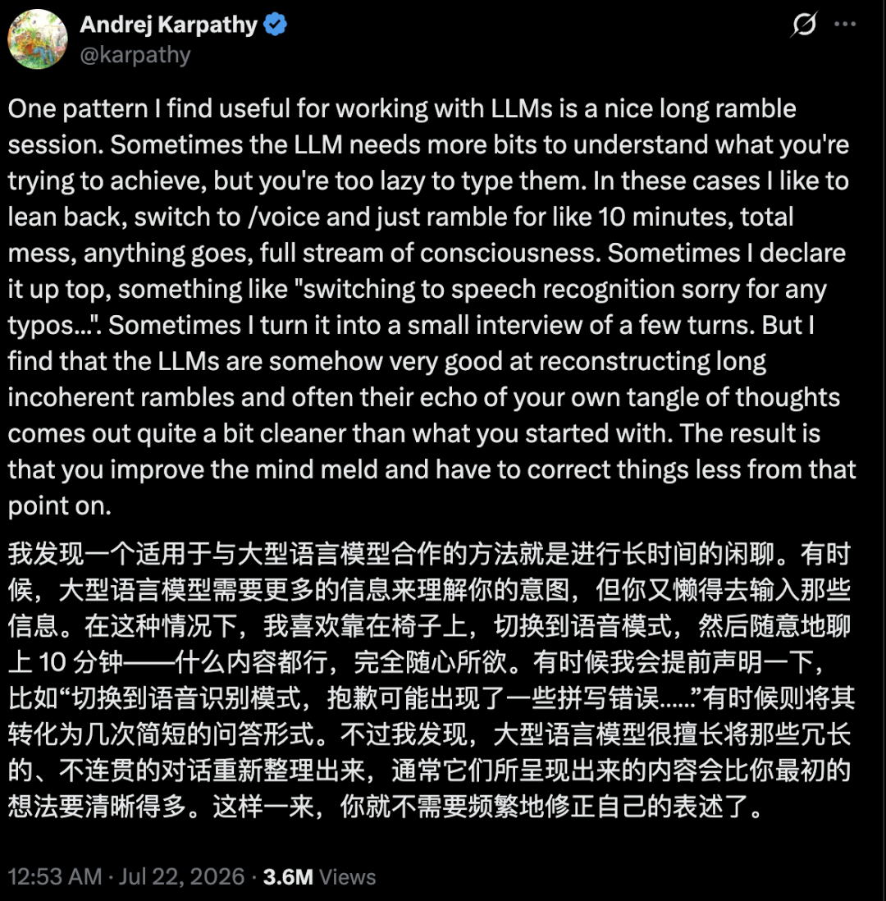
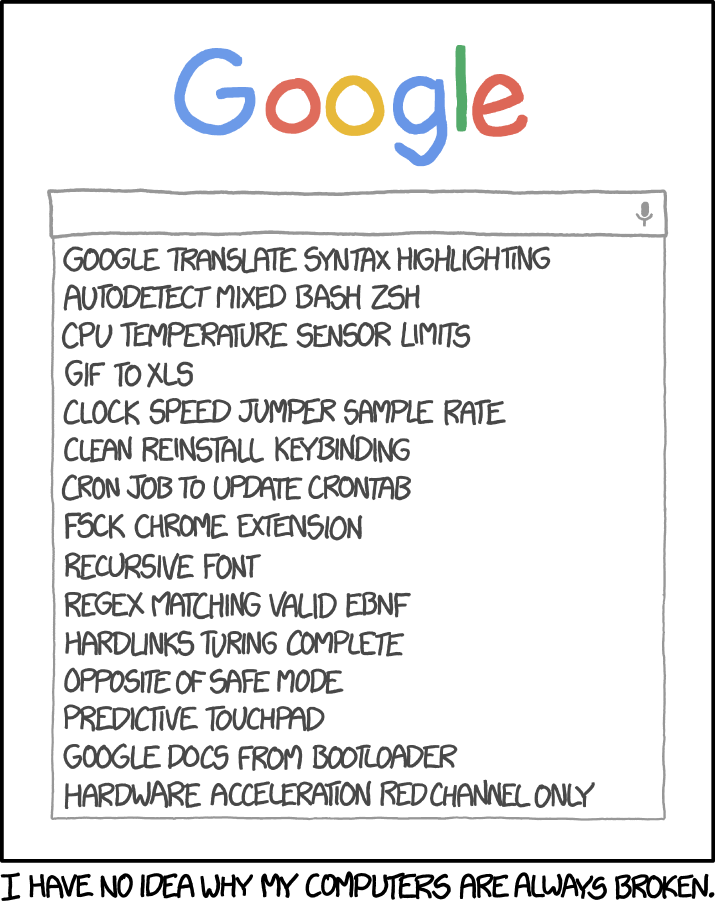
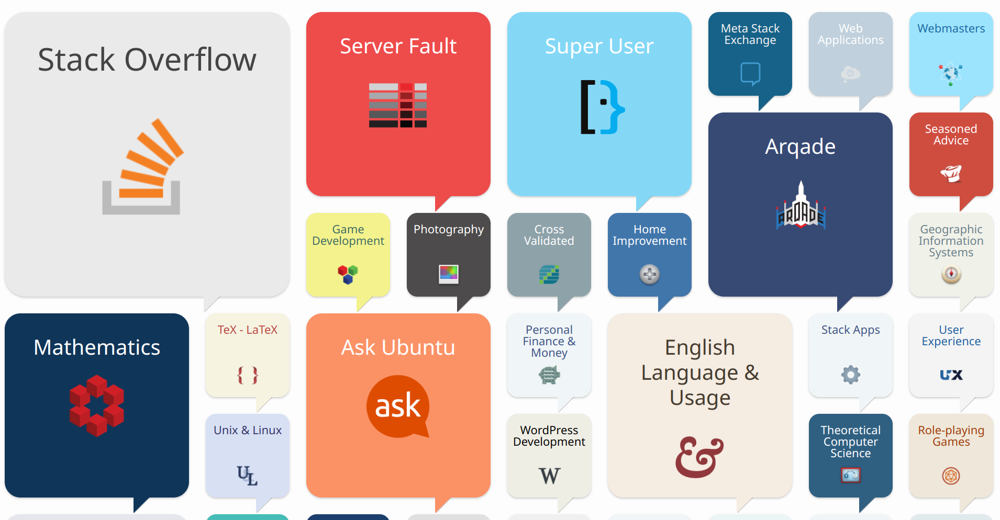
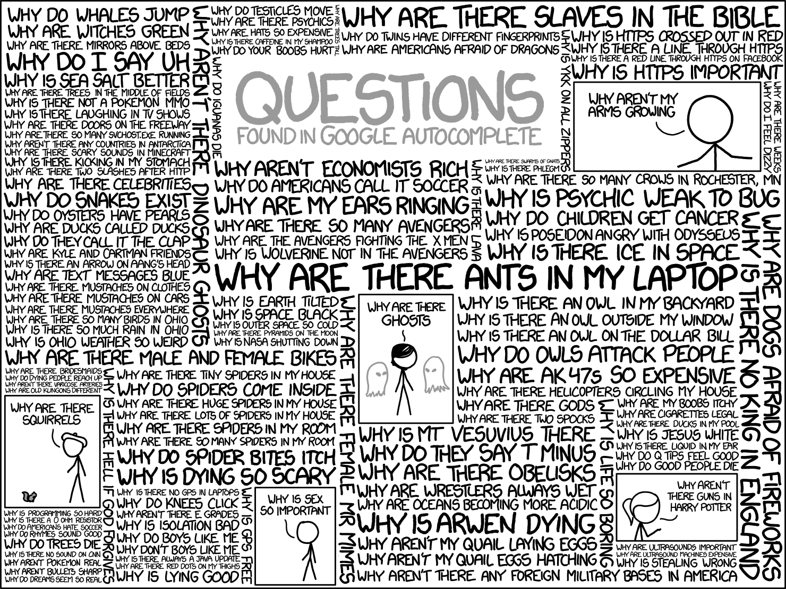

<div style="display: flex; justify-content: center; align-items: center; height: 700px;"> <div style="text-align: center; padding: 40px; background-color: white; border: 2px solid rgb(0, 63, 163); border-radius: 20px; box-shadow: 0 0 20px rgba(0,0,0,0.1);"> <h1 style="font-size: 48px; font-weight: bold; margin-bottom: 20px; color: #333;">SI100+ 2026 Lecture 02</h1> <p style="font-size: 24px; color: #666;">如何用搜索解决问题</p> <p style="font-size: 16px; color: #999; margin-top: 20px;">SI100+ 2026 Staff | 2026-08-07</p> </div> </div> <!--s--> ## 这节课要讲什么 - 很难说有人还不会用搜索引擎或者不会问大模型 - 那还要讲什么？ - 解决问题的元思维：定义问题、设计检索、判断信源、检验证据 <!--s--> <div class="middle center"> <div style="width: 100%"> # Part.0 我该搜吗？ </div> </div> <!--v--> ## 情景回想 - 你困惑的不是一个用来锻炼你的问题 - “刻意练习”是真实存在的 - 比如一些值得一做的习题之外的问题 - 你已经尝试过了一些方法，但是没有找到答案 - 你可能有一个解决方法，但是不确定是否合适/有没有更好的方法 - **你搜索这个问题不会导致学术不端** </br> <div class="center"> <font size="30">**我应该搜索吗？**</font> </div> <!--v--> <div class="middle center"> <div style="width: 100%"> # **去搜啊，为什么不呢？** </div> </div> <!--v--> ## 你应该开始搜索的 101 个理由 - 你现在真的遇到问题了，而遇到问题就应该**解决问题** - 网上很可能有这个问题的解决方案 - 只靠自己摸索不一定能解决问题 - 可能会搜索到高于这个问题的更深入的知识，扩充你的知识面 - 搜索的代价越来越小了（甚至对于计算集群这句话也成立） - 这一次没有搞懂，下一次还要再费时间 - 别人通常没有义务帮你解决问题，你应该感谢他们的帮助，但是搜索引擎（以及大模型）无所谓！ - 找出思路里面潜在的错误 - ...... <!--v--> ## 天哪，大模型时代 - 现在大模型可以代劳其中很大一部分 - 把描述改写成关键词 - 补上同义词、专业术语、英文说法 - 一次发起几十个查询 - 读 PDF、读表格、读代码 - 把十几个页面压缩成一段带引用的总结 - Deep Research 这一类系统的工作流已经变成 - 澄清目标 `->` 拆成子问题 `->` 生成多组查询 `->` 并行浏览 `->` 追踪原始来源 `->` 比较冲突 `->` 输出带引用的报告 - 所以“我懒得搜”“我不知道怎么问”已经不再是理由 <!--v--> ## 想清楚问题都能代劳？ <div style=" margin-top: 10px; margin-right: 10px;" markdown="1"> <p></p> - 组织语言好难！ - Karpathy 的做法：切到语音，漫无目的地讲十分钟，什么都行 - 让大模型整理冗长、不连贯的表述 <!--s--> <div class="middle center"> <div style="width: 100%"> # Part.1 AI 也可能犯错 </div> </div> <!--v--> ## AI 幻觉？ - 啥东西？为什么会有？ - 后面会讲 </br> - 编一个不存在的网址、编一本不存在的书 - 豆包豆包，帮我高考报考北大 - 更复杂的情况 - 引用了真实存在的资料，但那句话在资料里根本找不到 - 结果表面上很多样，实际上都在转述同一个来源 - 缺乏证据的推断，被写得非常确定 - 时间敏感的问题上，把不同版本的信息混在一起 </br> 总而言之：AI 也会犯错 <!--v--> ## 案例：这是什么旗？ > https://www.zhihu.com/question/6783171390/answer/55129079288 - 有人在知乎上贴了两张照片，问上面的旗子是什么 - 大模型的回答：这和奥林匹克有关/很可能是克虏伯公司的企业旗 - 正确答案：德国画家行会的标志 - Agent 做的事情是：抓住“旗帜 + 颜色 + 圆形图案”这些表层特征，输出一个可能性高的解释 - 它没有说“我不确定”，也没有去找一手材料 <!--v--> ## 案例：人是怎么找到答案的 - 从图片里提取要素：右下角的水印 “The Spirit of Liberation” - 按照要素搜索，得到 IMDB 评价与 Youtube 视频，验证的题目中“纳粹德国”这一信息属实 - 用新得到的关键词 “Munich，1937 JULY” 搜索，寻找对应时期慕尼黑发生了什么 - 在 wiki 上找到更多信息 - 反复迭代搜索，精进搜索使用的关键词 <!--v--> ## 所以说？ <div class="center" style="margin-top: 250px;"> # 真正重要的是**搜索的思维方式**。 </div> <!--s--> <div class="middle center"> <div style="width: 100%"> # Part.2 搜索是一种元思维 </div> </div> <!--v--> ## 先把问题变成可以搜的问题 - 搜索之前先回答几个问题 - 我要做的是什么决定？ - 我需要的是事实、解释、预测，还是价值判断？ - 时间、地区、人群、条件分别是什么？ - 什么证据会让我改变看法？ - 对比一下 - “AI 对教育好吗” `->` 几乎不可搜索 - “生成式 AI 对本科生独立写作能力的影响，有哪些实验或纵向研究” `->` 可以研究 - 这是什么旗帜？ `->` 一旦以图搜图搜不到就无法继续 - 搜索旗帜的特征，图片上的多种信息 `->` 还有迭代问题的空间 - 明确你的问题到底是什么！[提问的智慧 中文版](https://github.com/ryanhanwu/How-To-Ask-Questions-The-Smart-Way/blob/main/README-zh_CN.md) - 对于现在而言提问的智慧过于刻薄了，直接开始问大模型然后迭代 > 一开始就问出一个好问题 <!--s--> <div class="middle center"> <div style="width: 100%"> # Part.3 用什么搜 </div> </div> <!--v--> ## 通用的搜索引擎 <div style=" margin-top: 10px; margin-right: 10px;" markdown="1"> <p></p> <br/> 这些搜索引擎可以解决大部分问题 - Google - Bing - Bing 国内版/百度（仅适合用于搜索中文社区内容） - DuckDuckGo </div> <!--v--> ## 图片搜索 有人发了一张图片，你找他一问，他说 “我也是转发的，找不到后续” 你：😄 `->` 😧 `->` 😡 - [Google Images](https://images.google.com/): 最通用，对截取的图片搜索效果相对更好 - [Yandex Images](https://yandex.com/images/): 俄罗斯搜索引擎 - [百度图片](https://image.baidu.com/): 效果较差 - [trace.moe](https://trace.moe/): 以图搜番 - [SauceNao](https://saucenao.com/): 只能从完整图片搜索到原图 - 淘宝 App：拍照搜物品，维修工师傅从空调里面卸下来的电磁阀都能搜到 **通用搜索流程**：在 Google Images/Yandex Images 里面搜索，在结果里面找到更清晰或更完整的图片，也可以提取关键词然后用文字搜索，如果是二刺螈图片，把搜到的比较完整的图片放到 SauceNao 里面搜索出处，搜物品可以用淘宝拍照搜索 <!--v--> ## 图片搜索：多模态模型改变了什么 - 现在你可以直接把图丢给大模型，问“这是什么” - 它擅长的部分 - 读出图里的文字，包括手写和小语种 - 描述服饰、建筑、器物的风格和大致年代 - 给你**候选方向**和**可以拿去检索的术语** - 它不擅长的部分 - 确认这张图的出处 - 区分“很像”和“就是” - 承认自己不知道 - 正确的用法：让模型帮你**提取要素、生成关键词**，然后用图片搜索引擎去**落实到具体页面** <!--v--> ## 专业性强/特定领域的搜索 可以先用通用的搜索引擎找到那个领域的网站，然后继续检索 - [Google Scholar](https://scholar.google.com/): 学术搜索引擎，搜索论文 - [Sourcegraph](https://sourcegraph.com/): 搜索网上的代码 - [Wolfram Alpha](https://www.wolframalpha.com/): 数学搜索引擎，甚至能给出逐步解题过程 - 对应领域的社区：光是 [Stack Exchange](https://stackexchange.com/sites) 下就有各种主题的子社区，只用来搜索的话，小红书、知乎也是不错的选择 - 学校提供的数据库，可以在图书馆网站找到数据库列表 <p></p> <!--v--> ## 搜索概念/定义 - [Wikipedia](https://www.wikipedia.org/) - 不建议使用维基百科自带的搜索功能，直接在 Google 里面加上 Wikipedia 关键词搜索 - 有些词条没有中文/中文版质量差，推荐看英文版 - [Merriam-Webster](https://www.merriam-webster.com/): 最权威的英语词典之一 - RTFM: <em>the friendly manual</em>，有时候直接看官方文档是最好的选择 </br> <img src="images/tar.png" width="70%" style="display: block; margin: 0 auto;"> <div style="text-align: center;"> 有些时候还是坚持 TL; DR 原则更好 </div> <!--v--> ## 其他 - 当前事件 `->` 新闻、官方公告、当事方声明 - 对于时效性极强，还没有大范围出现的内容，在社交媒体搜索可能得到更多（但也更不可靠）的信息 - 书籍资源 `->` zlibrary/libgen/anna's archive，学校也提供一些出版社的下载权限（哇，Springer GTM 系列全都能下载） - 网站无法访问，可以在 [Wayback Machine](https://archive.org/web/) 上找到历史快照 - [Internet Archive](https://archive.org/): 互联网档案馆，有很多资源 - 法律政策 `->` 法规原文、政府网站、法院文书 - 人物和机构 `->` 官方目录、注册记录、工商信息查询网站 - 使用浏览器脚本，优化搜索体验 <!--v--> ## AI 搜索 - 适合交给它们的 - 宽搜，先建立一张“这个问题大概长什么样”的地图 - 读长 PDF、比较你已经找到的几份材料 - 把材料转换成表格或检查清单 - 不适合交给它们的 - 确认某个事实真实存在 - 判断引文是否准确 - 冷门话题 - 高风险决策 <!--s--> <div class="middle center"> <div style="width: 100%"> # Part.4 把什么丢到搜索框里 </div> </div> <!--v--> ## 关键词 - 一大段描述文字的搜索结果通常不尽人意的 - 搜索引擎不是有分词功能吗？ - 长句子分词后也有很多杂音 - 清除冗余 - “我该怎么用工具 x 做出 y?” `->` “x y” - 用空格来分隔关键词，视情况选择具体的还是更抽象的关键词 - 通过搜索结果来调整关键词 - 搜索结果里面可能不包含一部分关键词 `->` 尝试去掉这些关键词 - 搜索结果给你新的启发 `->` 尝试加入这些关键词 - 根据结果不断迭代 - 内容太老旧 `->` 限制搜索时间/加年份关键词/加软件版本号 - 名字一样，但是不是你要搜的领域的东西 `->` 加上领域关键词 - 中文搜索不到就使用被搜索内容最常用的语言（通常是英文）去搜索 <!--v--> ## 描述目的还是描述方法 - 当你对如何解决这个问题已经有初步想法的时候，加入你解决方式的关键词，而不是目的的关键词 - “我想不花钱就能用上 Mathematica” `->` “Mathematica 破解版/激活码/注册机” - 支持正版，使用学校购买的授权激活 Mathematica - 但是这种搜索方式不总是正确 > 告诉黑客们你认为问题是怎样造成的并没什么帮助。（如果你的推断如此有效，还用向别人求助吗？），因此要确信你原原本本告诉了他们问题的症状，而不是你的解释和理论； > > —— 提问的智慧 - 不要总认为“我觉得”就是对的 - 对 Agent 同理：你把错误的猜测写进提示词，它会非常配合地沿着错的方向走下去 - 大模型很可能足够了解这类问题，并直接给出比你更好的解决方案 <!--v--> ## 搜索引擎的高级功能 以 Google 为例，其他搜索引擎使用方式类似 - 强制包含关键词：半角双引号 - 强制排除关键词：减号 - 模糊匹配：星号 如 “Python \* tutorial” 可能匹配到 “Python beginner tutorial”，“Python Datascience tutorial” - 限制搜索网站：site: 如 “site:stackoverflow.com Python” - 限制搜索文件类型：filetype: 如 “filetype:pdf Python” - 限制标题/网址：intitle:、inurl: - 限制时间：before:2024-01-01、after:2025-06-01 <!--v--> ## 扩展搜索内容 - 对于一个网站，可以去掉其子域名，比如对于 manga.bilibili.com 可以搜索 bilibili.com - 对于转载，追溯到原创作者处，他可能有更多关于此内容的文章 - 对于某一作者，搜索他在不同网站的账号 - 搜索结果在一个论坛帖子上，那么可能这个论坛还有更多相关内容 - [SIFT 四步 by Mike Caulfield](https://hapgood.us/2019/06/19/sift-the-four-moves/)：Stop（停一下）、Investigate the source（查来源）、Find better coverage（找更好的报道）、Trace claims（追到原 始语境） <!--v--> ## Fun Fact: site: 到底有多强 - 2026 年 7 月，有人在 Google 搜 `site:claude.ai/share`，翻出了大量用户分享出来的对话 - 泄露的信息包含：个人隐私、内部文档、API key…… - 原因 - 想不被收录，需要页面自己带 `noindex` 头或者 meta 标签 - Claude 的分享页面没有带这些东西 - 于是这些链接被第三方论坛贴出来之后，就可以被搜索到了 - 已修复，不用试了 <!--s--> <div class="middle center"> <div style="width: 100%"> # Part.5 怎么看搜索结果 </div> </div> <!--v--> ## 太长了，我不看（TL; DR） - 可能关键词藏在页面某处，善用 `Ctrl + F` 网页内搜索 - 对于英语内容，可能没法像中文一样一眼扫出关键词，可以用对话大模型总结 - 搜到的东西太“形式化”了，比如 C++ 标准，可以去搜索别人总结/讨论的内容 - 内容里面有很多专业术语/看不懂的缩写 - 搜出来结果，让你读一部大部头的书（很可能推荐你去读的人自己都没读完） </br> - 该跳过就跳过，把时间花在更有价值的地方 - 可以先问大模型，打下基础再回看 - 但是如果涉及到重要的断言，自己回到原始来源去验证 - 总而言之，这是大模型总结的优势区间 <!--v--> ## 广告！广告！ - 广告通常在搜索结果的最上面（令人发指） - 仔细观察，有的广告会**标注“广告”标签** - 有些东西并没有“官网”，请在搜索之前确认（比如说 C/C++ 并没有官方网站，只有非官方的 cppreference，而且这个网站和配置 C/C++ 环境没有关系） - 检查广告网页的**域名** - `.org`, `.edu`, `.gov` 通常是官方网站 - 外国软件突然出现了 `.cn` 域名，显然不合理 - 广告域名和你要找的内容看起来完全无关 - 广告商是中国某不知名公司 - 味道很冲的关键词罗列：一键下载安装,无捆绑软件,安全无毒,绿色免费版 - 类似某某软件园这种的盗版下载站里面可能有资源，但是小心下载到 p2p 下载器 - 不要因为懒得分辨广告而直接点击，这很可能让你打开广告，你的目的是**解决问题！** - 可以选择使用广告拦截插件 <!--v--> ## 广告！广告！ <!--v--> ## 排除低质量内容 - CSDN：内容质量参差不齐 - 看起来就像是要卖东西/卖课的网站 - “经验分享”，点进去有百度网盘链接，里面是大量初级资料，不值得仔细阅读 - 百度百科的部分低质量页面，内容有错漏，没有实时更新 - 营销号：广泛存在于微信公众号、百度百家号等平台 - 机翻搬运：例如腾讯云搬运的 stackoverflow 帖子，看到机翻一定要找原帖 - 新增品种：AI 生成低质量内容 - 结构工整、段落明确、信息密度极低 - 通常是围绕一个简单的中心观点不断重复的废话 - 很可能和标题内容完全无关或通篇错误信息 - 因此我们需要关于判断信息可靠性的科学思维素养 <!--v--> ## 什么是信源 - 信源：信息最初被创造出来的地方 - 一手信源：信息第一次发表的地方 - 二手信源：所有转述它的地方 - 二手信源可能转述错误、信息丢失、过度解读、断章取义 - 三手以上甚至不可追溯信源的垃圾信息 - 视频网站上传的“浏览社交媒体群聊中转发自其他群聊的聊天记录”的手机录屏？ <!--v--> ## 大致判断信源等级 - 一级：国际组织的书面材料，如 WHO、IPCC - 二级：科学界公认的高质量期刊，尤其是 Cell、Nature、Science（CNS），以及自然指数期刊 - 三级：国家级机构的书面材料和各类教科书，如中国科学院、NASA、FDA - 四级：SCI/SCIE 收录的期刊 - 五级：口碑良好的专业垂直类媒体 - 六级：综合性大媒体（非平台性质） - 七级：某个专家学者的个人著作、访谈 - 最低：道听途说、找不到出处、“常言道”“古人云”“俗话说” - 重要补充 - 这只是**快速鉴别**的方法，不能拘泥，也不能钻牛角尖 - 真实世界是复杂的，做决策时要交叉比对、互相印证 <!--v--> ## 事实陈述与观点陈述 - 事实陈述：描述客观世界中可被证实或证伪的东西 - 观点陈述：描述你观察时所处的位置或采取的态度 - “这只苹果是红色的” `->` 事实陈述 - “我喜欢红色的苹果” `->` 观点陈述 - “人人都喜欢红色的苹果” `->` **事实陈述**，因为只要找到一个反例就被证伪了 </br> - 例如：“科学家应该努力去寻找上帝”（观点陈述）无法反驳“没有科学家有兴趣证明上帝是否存在”(事实陈述) - 有效的反驳只有两种：举出反例证伪一个事实；或者先确认事实，再探讨观点 <!--v--> ## 可证伪性与判决实验 - 可证伪性：一个命题在逻辑上是否**有可能**被证明是错的 - “在任何参考系中，光速不变” `->` 可证伪（只要找到一个反例） - “鬼魂是存在的” `->` 不可证伪（找到再多反例也没用） - 一个理论完全没有可证伪度，它就不是科学理论 - 可证伪度越高而且被证实，可信度越高 - 广义相对论预言日食时星光会偏折，风险极大，一旦被证实可信度就极大 - 这就是波普尔所说的**判决实验** - 你得到的信息是可证伪的吗？ <!--v--> ## 谁主张谁举证 - 举证责任：提出主张的一方需要拿出证据 - 提出**存在性**主张的一方负有举证责任 - “这座桥是我设计的” `->` 由他举证，而不是要求别人证明“不是他设计的” - “金字塔是外星人建的” `->` 由主张方举证 - 提出**因果关系**主张的一方也负有举证责任 - “吹冷风能引起感冒” `->` 由主张方举证这个因果关系 - 常见的错误是**举证责任倒置** - 用“没有证据证明它是假的”来论证“它是真的” - 把证据的缺失，当成不存在的证据 <!--v--> ## 用统计的眼光看现象 - 不要被自己的感觉欺骗 - 人人都有选择性遗忘：符合预期的记住，不符合的忘掉 - 有人认为程序员容易生女孩，于是能举出很多例子，其实反例全被他忘了 - 觉得自己排队总是排到慢的那队、开车总是吃红灯，同理 - 不要把特殊现象当普遍规律 - “那可不一定，我二舅吸了七十年烟活到九十多” - 每句话都没错，但都不能成为决策依据 - 正态分布意味着反常现象总是存在，刻意去找通常都能找到 - 经验也不等于规律：感冒是自限性疾病，一周左右自己会好，所以“捂汗好得快”这类经验很容易成立 <!--v--> ## 先后、相关、因果 - 因果关系必须符合先后关系 - 富人往往身材健硕爱运动 `->` “要想富，先瘦身”？ - 大多数情况是先富起来，才有时间和金钱健身 - **先后关系不一定是因果关系** - 每天鸡叫之后天就会亮，但天不是鸡叫亮的 - **相关不一定是因果** - https://www.tylervigen.com/spurious-correlations - 雪糕销量和溺亡人数同高同低，真正的原因是天气热 - 有因果一定有相关，反过来不成立 <!--v--> ## 常见的逻辑谬误 - 形式谬误：不用懂专业内容，只看论证结构就能驳倒 - 真命题的逆命题不一定为真：“伟大理论常不被主流接受”不能推出“不被接受的我就是伟大的” - 整体与部分混淆：香蕉好吃、黄鱼好吃，不代表香蕉炒黄鱼好吃 - 循环论证：把待证明的结论放进证明过程里 - 非形式谬误 - 稻草人：故意用滑稽的方式复述别人的观点，再打倒它 - 简单归纳：样本太小或不具代表性 - 万能定义法：随时用结果重新定义原因（“没有*真正的*苏格兰人会这么做”） - 把无知当证据：我想不出古人怎么建金字塔，所以一定是外星人 - 诉诸无关权威：生物学家谈理论物理，不比普通人更可信 - 虚假两难：制造一个并不存在的二元选择 - 对人不对事、诉诸结果、把偶然当必然 <!--v--> ## 我没搜到我想要的内容 <div class="middle center"> <div style="width: 100%; margin-top: -100px;"> # **首先回看前面的内容** </div> </div> <!--v--> ## 我没搜到我想要的内容 - 没有搜到是很正常的事情 - 问同学/问老师/问社区 - 也要接受一种结果：**这个问题目前没有可靠答案** - 大模型几乎永远不会承认自己不知道，而是编一段通顺的话，大家要小心求证 <p></p> <!--s--> <div class="middle center"> <div style="width: 100%"> # Part.6 搜完了干什么 </div> </div> <!--v--> ## 不费两遍力气 <div style=" margin-top: 10px; margin-right: 50px;" markdown="1"> <img src="images/trouble_shooting.png" width="35%" style="float: right;"> - Trouble shooting 是一件很费力的事情 - 你很可能在未来遇到一样的问题！ - 指点别人（费曼学习法） - 建立你的书签栏 - 小工具网站 - 特定方面的百科网站 - 如果你觉得有意思就一定要收藏，不然再想起来就会后悔 - 网上搜到了文件资源！ - 按日期与类型分类，仔细整理文件 - 通过学校云盘保存/分享文件 - 关键文件保留离线备份 </div> <!--s--> <div class="middle center"> <div style="width: 100%"> # Part.7 更多？ </div> </div> <!--v--> ## AI 摘要正在改变搜索行为 - Pew 分析了 900 名美国成年人的真实浏览数据 - 出现 AI 摘要时，用户点击普通搜索结果的比例是 **8%** - 没有 AI 摘要时是 **15%** - 点击 AI 摘要里引用来源的比例只有 **1%** - 看见 AI 摘要后直接结束浏览的比例是 **26%**，传统结果页是 16% - 后果 - 来源意识在弱化：多个来源被压缩成一个流畅的答案，分歧、背景和可信度差异都消失了 - AI 摘要信息可能来自不可靠的来源，用户没有意识到 <!--v--> ## 个体变强，群体可能变窄 - Nature Human Behaviour 的实验：ChatGPT 辅助的头脑风暴，产生的想法集合**更窄** - 原因不神秘 - 大量用户调用相似的模型 - 模型偏好高概率、常见、易表达的答案 - 于是 </br> <div class="center"> **AI 可以提高个体产出的平均质量，同时降低群体的认知多样性** </div> </br> - 由自己先列出大纲是有价值的 - 也有人让大量 Agent 互相辨论，结果会更好吗？ - 基础模型越来越好，这种情况会减少吗？ - 我不知道。 <!--v--> ## 认知卸载与认知放弃 - Microsoft 与 CMU 研究了 319 名知识工作者的 936 个真实使用案例 - 生成式 AI 通常会降低用户在多项认知活动上的主观努力 - **对 AI 越有信心，投入的批判性思考往往越少** - 区别在于 - 把机械步骤交给工具，腾出精力处理更高层的问题 `->` 提高能力 - 没有形成自己的模型，只接受工具给出的结论 `->` 制造依赖 - 自查 - 你能自己把这个结论讲清楚吗？ - 你能说出它最可能错在哪里吗？ - 这一页 slide 的 75% 是 Claude 写的 <!--v--> ## 非常重要的：学术诚信 - 不能把 AI 生成的内容当成自己的原创提交 - 引用必须能追溯到真实存在的一手来源 - 不同课程对使用生成式 AI 的规定不同 <!--s--> ## Reference - 提问的智慧：[How To Ask Questions The Smart Way 中文版](https://github.com/ryanhanwu/How-To-Ask-Questions-The-Smart-Way/blob/main/README-zh_CN.md) - 科学思维要点，汪诘，《读库 2001》ISBN: 9787513338806 - [请问这是纳粹德国的什么旗帜？ 白底红色的三个点 ? - Mr.President的回答 - 知乎](https://www.zhihu.com/question/6783171390/answer/55129079288) - Andrej Karpathy on “long ramble session”: [@karpathy, 2026-07-22](https://x.com/karpathy) - Google 搜索语法：[Refine web searches](https://support.google.com/websearch/answer/2466433) - 批判性思考：[Microsoft & CMU, The Impact of GenAI on Critical Thinking](https://www.microsoft.com/en-us/research/wp-content/uploads/2025/01/lee_2025_ai_critical_thinking_survey.pdf) - 想法趋同：[Nature Human Behaviour, 2025](https://www.nature.com/articles/s41562-025-02173-x) - AI 摘要与点击率：[Pew Research Center, 2025](https://www.pewresearch.org/short-reads/2025/07/22/google-users-are-less-likely-to-click-on-links-when-an-ai-summary-appears-in-the-results) <!--s--> ## Takeaway - 有问题就去搜 - 先明确问题 - 如果不能立刻明确，就先去搜，迭代问题 - 不要让 AI 取代你的创造性思维 </br> - 此 slides 包含 Claude Opus 5 生成内容 - 结果说明 AI 并不清楚我想讲什么 - 给 AI 擦屁股挺难的